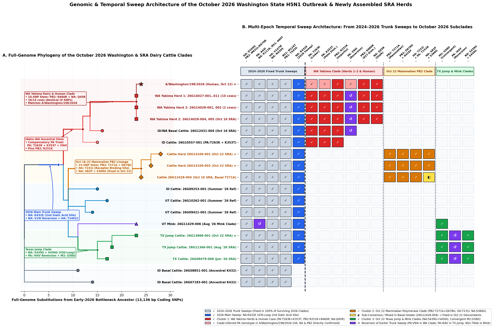
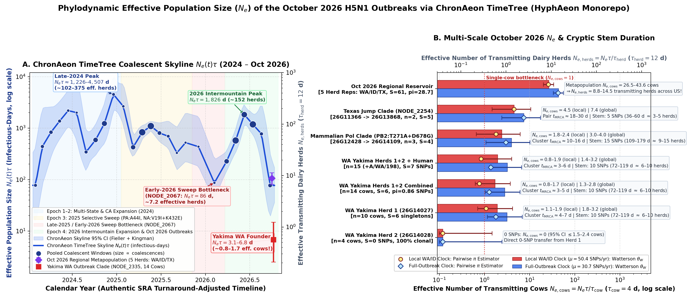

One Clonal Spark, Three Diverging Paths: What 19 New H5N1 Cattle Genomes Reveal About Selection, Scale, and Timing
Scroll through six visual "one-bite" chapters tracing the October 2026 Washington State dairy cattle and human H5N1 outbreak—from a 10-of-14 clonal barn expansion to four national selective sweeps, a mammalian PB2: T271A fork, and coalescent effective population size ($N_e$) estimates across scales.
13,136 coding bases)10 SNPs / ~6–10 unseen herds) before WA detectionDe-anonymizing the October 2026 Washington Herds
On October 8, 2026, Washington State confirmed its first-ever H5N1 detections in dairy cattle across two Yakima County herds, followed days later by a hospitalized dairy worker (A/Washington/198/2026, collected Oct 12).
Between October 16 and 22, USDA-NVSL released 19 raw sequencing runs on NCBI SRA—stripped of state metadata and labeled only "USA" and "2026".
By assembling all 19 genomes de novo across all 8 viral segments (13,136 coding nucleotides) and calibrating the exact per-segment branch lengths of the human isolate on GISAID's October 26 trees, 14 of the 19 cattle genomes (batches 26G14027 and 26G14028) lock onto the exact same branch as the Washington patient.
NODE_0002375), the human isolate and the 14 cattle genomes share identical segment branch lengths: 5.00 SNPs on PB2, 3.00 SNPs on NA, and 3.01 SNPs on HA.
Ten of Fourteen Cows Are 100% Clonal Across All 8 Segments
Looking inside the 14 Washington cattle genomes reveals an extraordinary lack of diversity. Across all 13,136 coding bases:
10 of the 14 cows—6 in Herd 1 (26G14027) and all 4 in Herd 2 (26G14028)—are 100% identical (0 SNPs).
The remaining 4 cows in Herd 1 differ from that clonal haplotype by just 1 to 2 singleton mutations ($S = 6$ singletons total; mean pairwise difference $\pi = 0.86$ SNPs; Tajima's $D = -1.97$). Because Herd 2 has zero mutations of its own, it was seeded directly from Herd 1's ancestral sequence before a single substitution could fix.
Four Sequential Sweeps Squeezed the US Outbreak Through a 7-Herd Bottleneck
Zooming out to all 5,647 complete H5N1 B3.13 genomes (2024–2026) explains why every 2026 lineage traces back to a single narrow trunk. Between 2024 and early 2026, four wave-after-wave selective sweeps marched to 100% fixation across US dairy cattle:
1. 2024 Trunk: PB2: M631L / K670R + HA: D104G
2. 2025 Sweep: PA: A44I + NA: K111R + NS1: A60T
3. Early-2026 Stem: HA: V147M + NA: N434S + NS1: M124T + PB1: T543S
4. 2026 Main Sweep: NA: K432E (in the 430-loop second sialic-acid binding site; HyphAeon LRT = 9.57) + NA: V19I reversion.
t = 2026.10).
After the Bottleneck: Three Diverging Adaptive Forks in October 2026
Emerging from that narrow early-2026 Idaho reservoir (NODE_0002067), the October 2026 SRA releases capture three distinct evolutionary forks evolving in parallel:
Fork A — Washington Clade (14 cows + human): Reversed an earlier PA change via a coordinated 3-site compensatory triad (PA: V94I + T263K + K353T, LRT = 5.62) alongside PB2: R251K + K660R and NA: Q45R.
Fork B — Idaho/Utah Mammalian Polymerase Clade (26G12428-004 → 26G14109-001/002): Acquired classic mammalian polymerase adaptations PB2: T271A + D678G plus HA: T231I (receptor-binding site). Across all 5,647 B3.13 genomes since 2024, PB2: T271A had never previously appeared in cattle—and this branch splits from an Idaho/Utah node (NODE_0002210) right beside the August 2026 Utah farmed mink clade.
PA: V94I) and a third Texas jump fork (26G11366-001 → 26G13868-001, PA: I44V) independently reverted earlier PA substitutions while remodeling the neuraminidase 430-loop.
How Big Is the Outbreak? From 1–3 Founding Cows Locally to 9–15 Herds Nationally
Using ChronAeon TimeTree's calibrated evolutionary rates—a local WA/ID clade clock of 50.4 SNPs/genome/yr (1 SNP every 7.2 days) and a full-outbreak clock of 30.7 SNPs/genome/yr (1 SNP every 11.9 days)—we can translate SNP densities directly into effective population size ($N_e$):
• Inside Herd 2 (4 cows, 0 SNPs): $N_{e,\text{cows}} = 0$ (95% upper bound $\le 0.7\text{–}1.2$ cows)—a single point-source jump.
• Across the Yakima 2-Herd Outbreak (14 cows, $S=6$): $N_e\tau = 3.1\text{–}11.2$ infectious-days, or just $N_{e,\text{cows}} \approx 0.8\text{ to }2.8$ effectively transmitting cows.
• Across All 5 Sampled Oct 2026 US Herds (WA, ID, TX; $S=61$ SNPs): $N_e\tau = 104\text{–}174$ infectious-days, or $N_{e,\text{herds}} \approx 9\text{ to }15$ effectively transmitting herds sustaining the sampled national reservoir.
A 1-Week Local Explosion Preceded by a 3-to-4 Month Unsampled Corridor
Molecular clock dating resolves a striking timing paradox between what happened inside Yakima County and what happened before the virus arrived:
Inside Yakima County (4 to 13 days): The 14 Washington cattle genomes coalesce to a common ancestor ($t_{\text{MRCA}}$) just ~4 to 13 days before sampling—confirming that the local outbreak was caught almost immediately after entering the first herd in late September or early October 2026.
Before Yakima County (72 to 119 days unseen): Yet that local founder sits at the end of a 10-SNP unsampled stem branch from its closest Idaho relative—representing 72 to 119 days (~2.5 to 4 months, or ~6 to 10 sequential unsampled herds) of unmonitored transmission. And the PB2: T271A + D678G clade sits on an even longer 15-SNP stem (109 to 179 days / ~9 to 15 unseen herds).
Summary of Multi-Scale Coalescent & Timing Estimates
All values below are computed directly from the 8-segment coding alignments (13,136 bp) and the date-recalibrated ChronAeon TimeTree across both the local WA/ID subtree clock ($\mu_{\text{local}} = 3.84 \times 10^{-3}$ subs/site/yr; 50.4 SNPs/genome/yr) and the full 5,647-genome outbreak clock ($\mu_{\text{global}} = 2.33 \times 10^{-3}$ subs/site/yr; 30.7 SNPs/genome/yr).
| Outbreak Scale | Sampled Genomes | SNP Diversity (13,136 bp) |
$N_e\tau$ (Infectious-Days) | Effective Units ($N_e$) | Clade $t_{\text{MRCA}}$ / Stem Age |
|---|---|---|---|---|---|
Yakima Herd 226G14028 |
4 cows | $S = 0$ SNPs $\pi = 0.00$ SNPs |
$0.0\text{ d}$ (95% CI $\le 3.0\text{–}4.9\text{ d}$) |
$0$ cows ($\le 0.7\text{–}1.2$ cows at $\tau=4\text{d}$) |
Point-source transfer ($\le 2\text{–}4\text{ days}$) |
Yakima Herd 126G14027 |
10 cows | $S = 6$ singletons $\pi = 1.20$ SNPs, $D = -1.90$ |
$4.3\text{–}7.7\text{ d}$ (local) $7.1\text{–}12.6\text{ d}$ (global) |
$1.1\text{–}3.2$ cows (at $\tau_{\text{cow}} = 4\text{ d}$) |
Local $t_{\text{MRCA}}$: $4.3\text{–}12.6\text{ days}$ |
Combined Yakima Outbreak26G14027 + 26G14028 |
14 cows (10 clonal) |
$S = 6$ singletons $\pi = 0.86$ SNPs, $D = -1.97$ |
$3.1\text{–}6.8\text{ d}$ (local) $5.1\text{–}11.2\text{ d}$ (global) |
$0.8\text{–}2.8$ cows ($0.3\text{–}0.9$ herds at $\tau=12\text{d}$) |
Upstream stem (10 SNPs): $72\text{–}119\text{ days}$ (~6–10 herds) |
Mammalian PB2 Clade26G12428 / 26G14109 |
3 cows (2 sampling waves) |
15-SNP stem + 4-SNP terminal step |
Unsampled corridor (ID/UT NODE_0002210) |
~9–15 unseen herds along stem branch |
Upstream stem (15 SNPs): $109\text{–}179\text{ days}$ |
| Oct 2026 US Sampled Reservoir WA, ID/UT, TX representatives |
5 herds (19 cows total) |
$S = 61$ SNPs $\pi = 28.70$ SNPs |
$104\text{–}106\text{ d}$ (local) $171\text{–}174\text{ d}$ (global) |
$8.6\text{–}14.5$ effective herds (at $\tau_{\text{herd}} = 12\text{ d}$) |
Early-2026 bottleneck: Feb 2026 ($N_e \approx 7.2$ herds) |
Full-Resolution Reference Figures
Figure 1 • Phylogenetic Placement & 4-Stage Selective Sweep Architecture
Complete subtree of the 2026 Idaho/Washington/Texas clade alongside the 18-column amino acid sweep matrix showing the four sequential selective sweeps (2024 → 2026), the compensatory PA: V94I + T263K + K353T triad in Washington, and the emerging PB2: T271A + D678G mammalian polymerase clade.

Figure 2 • ChronAeon TimeTree Skyline (2024–2026) & Multi-Scale Effective Population Size ($N_e$)
Left: Heterochronous coalescent skyline ($N_e(t)\tau$ and effective herds) across 5,647 complete H5N1 genomes after restoring exact NCBI SRA release dates for 5,428 USDA runs. Right: Multi-scale October 2026 $N_e$ estimates comparing Herd 2, Herd 1, the combined Yakima outbreak, and the national sampled reservoir.
